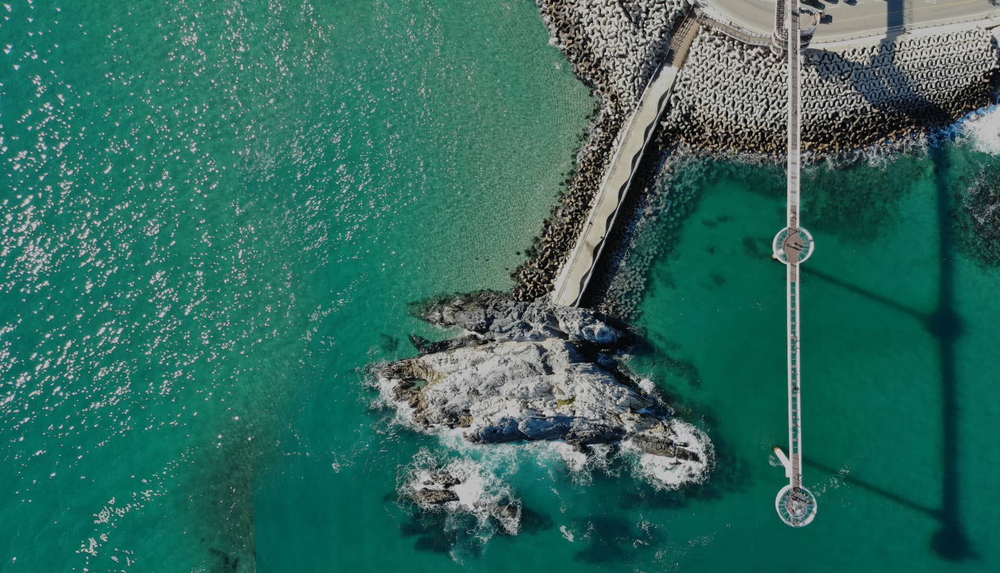

본문 바로가기
문화관광
울진군청
군수실
울진군의회
산하기관 ↓
농업기술센터
보건소
맑은물사업소
왕피천공원사업소
체육진흥사업소
관련사이트 ↓
죽변해안스카이레일
왕피천공원
울진군청소년수련관
종합복지회관
구수곡자연휴양림
과학체험관
문화예술회관
연호문화센터
통합예약시스템
이야기하다
울진STORY
울진에서 힐링
명소찾아 삼만리
색다른 축제,체험
확트인 바다,풍경
감칠맛 나는 울진
추천여행 울진!
권역별 추천코스
일정별 추천코스
드라이브 코스
울진군 사이버투어
울진 여행 스토리VOD
한국어
English
日本語
中國語
둘러보다
울진명소
전체
자연/사찰
전시/관람
해수욕장/항구
휴양/온천
공원/시설
레저/트레킹
농어촌체험
즐겨보다
울진대게와 붉은대게 축제
울진금강송 송이축제
평해남대천단오제
성류문화제
축제개요
행사일정
주요행사
족변항 수산물축제
축제개요
행사일정
주요행사
행사배치도
역사/문화
이달의 문화행사
울진 문화유산
국가지정문화재
도지정문화재
사적지
역사적인물
전설/설화
특별한 이야기
마을 이야기
디지털울진문화대전
울진 유교문화
지역별 유적/인물
멀티미디어자료
유적체험관광
유교문화연표
울진유교넷
울진 음식문화
향토음식
웰빙음식
대게음식
금강송송이음식
유기농매실음식
오징어/표고버섯음식
울진군지
맛집/숙박/특산물
울진맛집
전체
위생등급업소
모범음식점
안심식당
으뜸음식점
숙박업소
전체
호텔/모텔/여관
민박/펜션
농수특산물
여행가이드
공지사항
관광안내
1330관광안내
주요관광지 요금
주요관광지 전화번호
교통안내
관광지도
관광안내책자신청
관광사진공모전
나의울진여행기
여행갤러리
울진군청 |
로그인 |
사이트맵

화합으로 새로운 희망
바다를 가로지르는 스릴 넘치는 하늘 바닷길
등기산공원 / 스카이워크